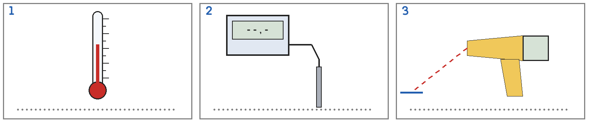
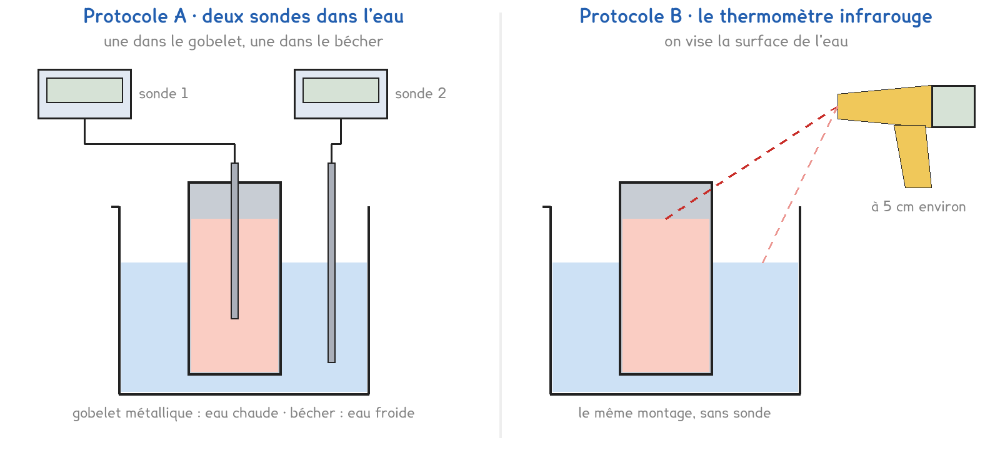
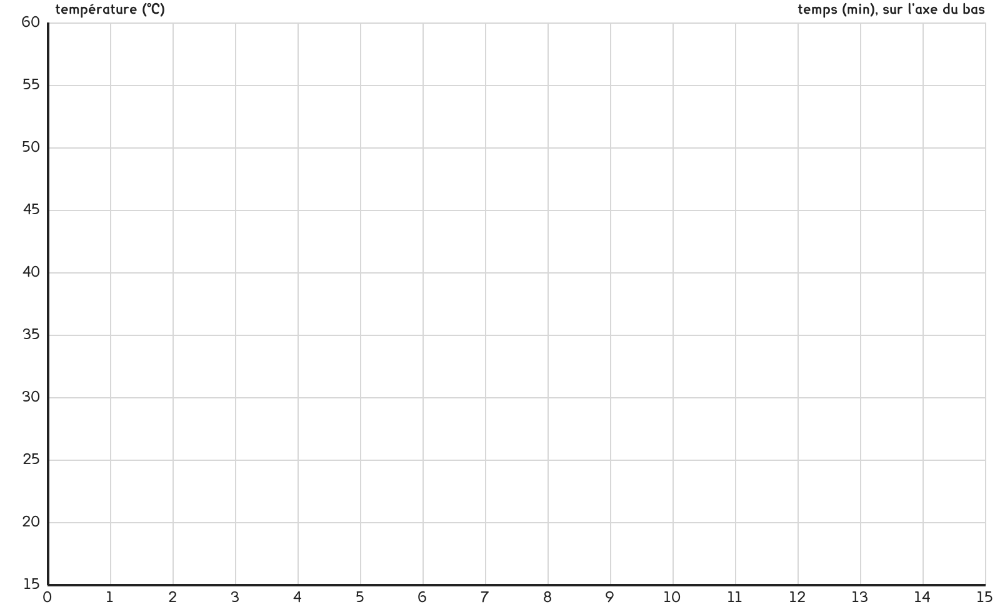

CAP · toutes spécialités · TP commun CAP-04
Un gobelet d'eau chaude plongé dans l'eau froide, jusqu'où vont les deux températures ?
3 figures
Sujet. Le lait du biberon est trop chaud : on pose le biberon dans un bol d’eau froide. Le lait refroidit, l’eau du bol se réchauffe.
Problématique : un gobelet d’eau chaude plongé dans l’eau froide, jusqu’où vont les deux températures ?
Au laboratoire, le biberon est remplacé par un gobelet métallique de 100 mL d’eau à 60 °C, le bol par un bécher de 200 mL d’eau à 15 °C.
a) Écrire sous chaque thermomètre : à liquide, à sonde, infrarouge.

b) Relever la température de la salle sur votre thermomètre : …………………… °C
Série · des degrés Celsius aux kelvins. T = θ + 273. Le premier est fait.
| 0 °C = 273 K | 15 °C = …………………… K | 30 °C = …………………… K |
|---|---|---|
| 60 °C = …………………… K | 100 °C = …………………… K | −10 °C = …………………… K |
Série · de combien de degrés ? Un corps qui refroidit perd des degrés, un corps qui se réchauffe en gagne. On fait la différence. Le premier est fait.
| de 60 °C à 30 °C : perd 30 °C | de 15 °C à 30 °C : gagne …………………… °C |
|---|---|
| de 80 °C à 45 °C : perd …………………… °C | de 20 °C à 35 °C : gagne …………………… °C |
| de 55 °C à 38 °C : perd …………………… °C | de 12 °C à 29 °C : gagne …………………… °C |
Deux protocoles répondent à la même question. Une partie de la classe prend A, l’autre prend B, et on compare à la fin.
Protocole A · deux sondes dans l’eau. Une sonde dans le gobelet, une dans le bécher : on lit les deux températures toutes les minutes.
Protocole B · le thermomètre infrarouge. On vise la surface de l’eau du gobelet, puis celle du bécher, toutes les minutes. Il ne touche pas l’eau.

c) Compléter le tableau pour comparer les deux protocoles.
| Protocole A | Protocole B | |
|---|---|---|
| Nombre d’appareils | …………………… | …………………… |
| Ce qu’on mesure, entourer | dans l’eau · la surface | dans l’eau · la surface |
| Sa limite, entourer | deux sondes par poste · la surface seulement | deux sondes par poste · la surface seulement |
Le choix se fait maintenant, avant de toucher au matériel. Le professeur peut imposer le protocole qui reste libre.
d) Entourer votre protocole, puis la raison.
Protocole A · Protocole B
parce que : on mesure dans l’eau · on ne touche pas l’eau
Avant de mesurer, on fait une hypothèse.
e) Au bout d’un long moment, les deux eaux seront à, entourer :
15 °C · environ 30 °C · 60 °C · 75 °C
Avant de commencer
L’eau chaude est versée par le professeur, à 60 °C au plus. On tient le gobelet par le haut, jamais par le fond.
Un élève lit les températures, l’autre écrit, et un chronomètre donne les minutes.
Les températures s’écrivent en degrés Celsius.
f) Relever les deux températures au fil du temps.
| t (min) | 0 | 1 | 2 | 3 | 4 | 5 | 6 | 8 | 10 | 12 | 15 |
|---|---|---|---|---|---|---|---|---|---|---|---|
| Gobelet (°C) | |||||||||||
| Bécher (°C) |
Pendant que les températures se rapprochent, on dessine le montage.
g) Schématiser votre montage : le gobelet, le bécher, les deux eaux, vos appareils.
Le schéma se dessine sur la feuille du TP.
h) Tracer les courbes, un point par mesure : en rouge l’eau chaude, en bleu la froide.

i) Les deux courbes, entourer : se croisent · se rejoignent · s’éloignent
À la fin, elles sont vers …………………… °C. Hypothèse e confirmée : oui · non
j) Relever la température finale d’un groupe qui a pris l’autre protocole.
…………………… °C. Écart de 2 °C au plus avec la vôtre : oui · non
k) Au début, les postes B ont visé la paroi brillante du gobelet chaud.
Lu : …………………… °C, pour une eau à …………………… °C. L’infrarouge dit juste · se trompe.
l) Répondre à la problématique en une phrase.
Ce que ce TP a établi, à écrire sous la dictée du professeur :
À RETENIR
À compléter en classe, sur la feuille du TP.
TP commun de physique-chimie, toutes spécialités. Le travail se fait sur la feuille du TP : cette page en est la version à l'écran, sans les lignes à remplir. Rien n'est enregistré.